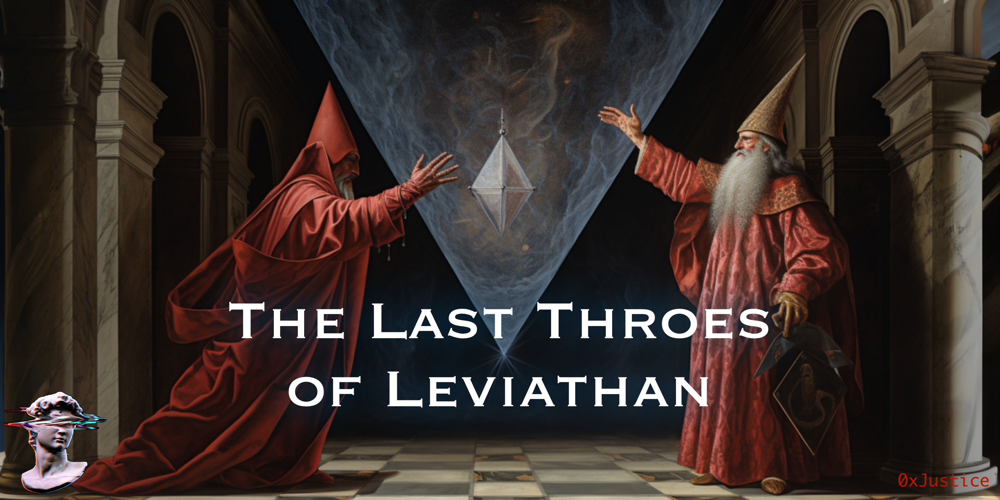
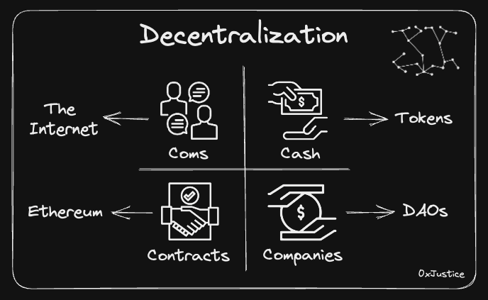
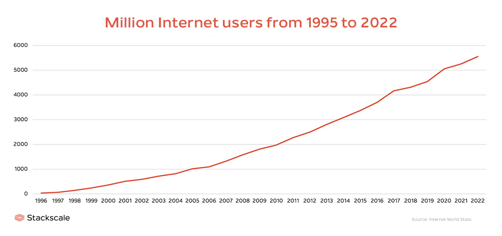
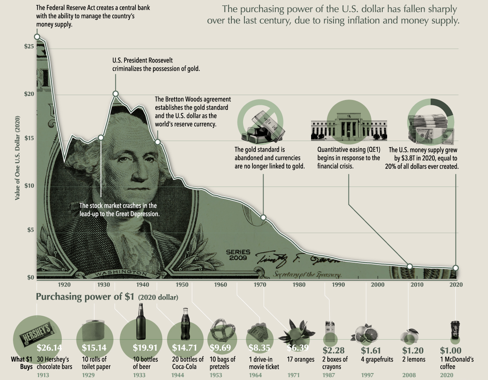
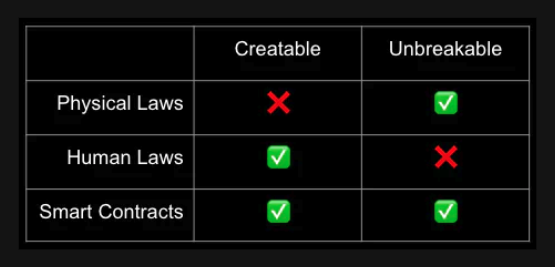

The Last Throes of Leviathan
Originally published at https://paragraph.com/@0xjustice/the-last-throes-of-leviathan

Decentralization is about preventing the exploitability of valuable systems. It's about removing single points of failure by eliminating intermediaries. Decentralization is not an end in itself. You can smash a mirror into pieces to "decentralize" it, but this doesn't make it more valuable.
For nearly all of human history, the state has acted as the ultimate intermediary and has done so without the pressure of competition. Books like The Sovereign Individual have predicted that the invention of the microprocessor and the Internet would radically subvert this dynamic.
The authors suggest that we are as unable to comprehend a world not dominated by the state as the people of the middle ages would have been able to imagine a world not governed by the Roman church. While not foretelling its total downfall as an institution, they do predict the end of the state's presumption of monopoly as the middleman of human activity.
"Governments will ultimately have little choice but to treat populations in territories they serve more like customers, and less in the easy that organized criminals treat the victims of a shakedown racket." - The Sovereign Individual
One way to map this transition is to identify critical areas of disintermediation. This essay will explore four such areas and conclude with an extrapolation of what the future might bring. These four pivotal areas of disintermediation are communications, currency, contracts, and companies.

Decentralized Communications
The first significant shift event in this saga occurred with the Internet. ARPANET officially changed to the TCP/IP standard on January 1, 1983, giving us a birthdate for the Internet. This event is the first major disintermediating event because, in one fell swoop, it democratized all data and information sharing.
Anyone could host a website, and anyone could talk to anyone in the world. By the '90s, everyone was speculating about the consequences of globalization. Wikipedia replaced Britannica, and the days of three news channels and one newspaper were replaced with thousands of news sources and an endless supply of citizen journalists.

https://www.stackscale.com/blog/internet-evolution-statistics/
Nazi Germany, Mao Zedong's famines, and the Soviet-induced famine of Ukraine all relied on the state's ability to sensor and control all forms of communication and news media. The Internet has decentralized "the narrative." The state must compete with other sources to determine what is relevant and legitimate. This new environment is the separation of state and truth.
Decentralized Currency
Milton Friedman predicted it, and the Cypherpunks delivered it through Satoshi Nakamoto: Digital cash. Before this, nearly all global currencies fell within the control of the state, and no state has been able to resist the temptation of the printer. It's the perfect trap.
Unlike the private sector, no mismanagement and misappropriation can render a state insolvent. Even democratic processes are useless when politicians can buy constituents with an endless supply of fiat. The US dollar has fallen almost four times in my lifetime, and the government printed 80% of all dollars in circulation in the last three years. So alarming and unsustainable is this trend that luminaries like Balaji bet $1M that the dollar would collapse by June of this year.

https://www.visualcapitalist.com/purchasing-power-of-the-u-s-dollar-over-time/
Bitcoin changes all this. It demonstrated a way to create a currency that prevented tampering and didn't privilege one participant. By making everyone a bookkeeper, it precluded any one party from manipulating the system. Bitcoin and the many technologies that followed decentralized money, separating money and state.
Global superpowers are reeling from the implications because it dramatically undermines the previous world order. BlackRock CEO Larry Fink's reiterated this post-state-centric reality when he said, "Bitcoin is an international asset—it's not based on any one currency—so it can represent an asset that people can play as an alternative," he said in an interview on Fox Business.
Decentralized Contracts
Digital cash is significant, but the world runs on contracts. The earliest contracts were called covenants or treaties and were solemn oaths. Participating parties would solemnly promise to do something and call upon a deity to curse them if they failed to live up to their promise.
Much later, legal contracts were born when civil institutions like governments and courts arose to enforce and arbitrate such agreements. Contracts have been the primary means of coordination for most of human history.
This history took on new significance when Nick Szabo introduced the idea of a smart contract. A smart contract is a set of promises encoded in a blockchain platform that executes if predefined criteria get met. This capability means that instead of taking a claim to court, it can self-execute releasing funds to the appropriate parties upon settlement. Even when human arbitration is needed as a backstop, we can code it into the smart contract.

https://twitter.com/singularityhack/status/1651281961108004864
In my other writings, I have called this a third law of nature, and I don't believe this is hyperbole. The disintermediation of contracts is a quantum leap in human coordination. We can't overstate the access, speed, and efficiency resulting from this technology. Smart Contracts are upending an entire class of regulatory and legal priesthood. Over 720M smart contracts have been deployed since Ethereum launched, and growth increased by almost 300% in 2022.
Decentralized Companies
Humans go further when they go together. Even creating something as simple as a pencil requires thousands of specialized participants to create everything from the eraser, graphite, and wood and assemble and distribute it in mass.
The basic idea is that you can build more complex things and do so more cheaply if you align people under a single mission and incentive structure to reduce transaction costs. This idea is called the theory of the Firm, and the stakeholders of such an organization are tied together through contracts and a claim on future value (joint stock).
The Dutch East India Company in the 17th century was the first prominent example of this joint stock setup. What's essential to take away from this is that the only thing that enforces a person's claim on a shared asset is the state. Companies exist only as far as they are registered with and recognized by the government. The same holds for a company's stock. It exists as long as the intermediary says it does. All of this changes with DAOs.
For the first time in history, a group can possess shared ownership of an asset or enterprise without an intermediary. This property of shared ownership is the fundamental feature of a DAO and encompasses the idea of control and financial interest. Using smart contracts, you can pool money with others to buy an asset, collectively control that asset, and share in the appreciation, separate from any government, purely based on unstoppable code.
Conclusion
There's a natural progression to this unfolding saga such that each layer is a prerequisite to the succeeding one. Once we open the lines of communication (coms), we need a way to send value (currency); thus, commerce is born. From there, we develop more sophisticated agreements about future commitments (contracts) and shared interests (DAOs).
A. N. Whitehead famously said, "Civilization advances by extending the number of important operations which we can perform without thinking about them." That's what each of these advancements does. It abstracts away underlying complexities, creates assurances about the future, and enables the possibility of automation. See Whitehead Advances. So where is all this going?
Computer Scientist and Scfi legend Vernor Vinge was one of the earliest to popularize the concepts of the singularity and cyberspace. His book Rainbows End imagines a world where self-enforcing digital contracts are commonplace and available to all.
These "Affiliances," as the book calls them, are a kind of smart contract used as freely as we use language. They are temporary alliances or collaborations formed for a specific purpose that can be as short-lived as a few minutes and are created and concluded with casual fluidity. They're used in everything from school projects to covert operations, and characters conduct activities through ad-hoc groups formed for specific purposes unmediated by governments or companies.
That fiction is becoming a reality. One of the key contributors to the ERC20 standard, Simon de la Rouviere, has been promoting the advantages of tokenization since 2013. It's through the mechanism of tokenization that we can programmatically coordinate in the ways imagined by Vinge. Simon imagines how deep the rabbit hole goes.
"Do you think it would ever have made sense to en-masse create ownership in *just* a song? Tokenizing attention? Tokenizing a contract directly? Tokenizing memes? Tokenizing people? Tokenizing this blog post? Tokenizing public goods? We invented something as low bandwidth as a 'like'. How granular do blockchain tokens go? What's the lowest bandwidth coordination system blockchain tokens allow? 10 second organisations? Idea derivatives? Meme derivatives?" - History Is Rhyming: Fitness Functions & Comparing Blockchain Tokens To The Web
These are the new and unimaginable realities of a distributed and self-sovereign populace. The state personified as Leviathan, will not go willingly or quietly. Expect every mitigation technique possible, from global psyops campaigns to eradicating civil liberties.
It is a war worth fighting and one the Cypherpunks anticipated. Our consolation is that our weapons are not physical but electronic, cryptographic, and memetic. We are witnessing the last throes of Leviathan.
"Faster than all but a few now imagine, microprocessing will subvert and destroy the nation-state.." - The Sovereign Individual
Originally published on 0xJustice.eth